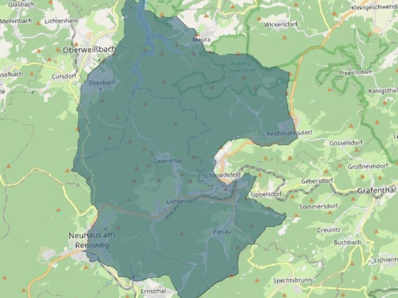

Hydraulic engineering
Dam & Reservoir Design, Thuringia
Planned a drinking water reservoir and concrete dam to DIN 19700, linking it with the existing Vorsperre Deesbach dam. The work covered catchment analysis, storage zoning, flood design with KOSTRA rainfall data and unit hydrographs, and GIS site assessment.
View details & photos →